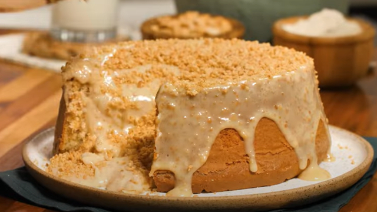

Bolo de amendoim

Bolo de amendoim com cobertura de chocolate
Ingredientes:
- 1 xícara de açúcar
- 3 gemas
- 1 xícara de margarina
- 1 xícara de leite
- 1 xícara de amendoim torrado
- 1/2 xícara de amido de milho
- 2 xícaras de farinha de trigo
- 3 claras em neve
- 1 colher (sopa) de fermento em pó
Cobertura:
- 1 lata de leite condensado
- 1/2 xícara de amendoim triturado
- 1 colher (sopa) de margarina
- 1 caixa de creme de leite
Modo de preparo:
- Em uma batedeira, adicione o açúcar, a gema e a margarina.
- Bata tudo até formar uma mistura homogênea. Quando os três primeiros ingredientes estiverem totalmente incorporados, vá
adicionando aos poucos o leite, seguido do amendoim e amido de milho, sem deixar de bater.
- Quando os ingredientes estiverem todos misturados, acrescente a farinha peneirada na massa e misture manualmente com uma
espátula ou colher de pau.
- Finalize com a clara em neve e o fermento, misturando os dois últimos ingredientes suavemente só para incorporar na
massa. É importante que as claras em neve estejam bem areadas para deixar o bolo fofinho.
- Despeje a massa em uma forma para bolos piscina untada com margarina e leve para assar em forno aquecido a 180°C por 35
minutos. Você também pode preparar esse bolo em uma forma comum redonda com furo no meio.
- Enquanto o bolo assa, prepare a cobertura. Para isso, misture em uma panela o leite condensado, amendoim e a margarina.
Mexa tudo em fogo baixo até atingir o ponto de brigadeiro, ou seja, quando começar a desgrudar da panela.
- Por último, acrescente o creme de leite e misture mais um pouco até a cobertura ficar bem cremosa.
- Quando o bolo estiver pronto, espere esfriar um pouco antes de desenformar. Bolo fora da forma, agora é só despejar com
a cobertura.
- Finalize o bolo polvilhando mais um pouco de amendoim torrado por cima da cobertura.
- Seu bolo de amendoim está pronto para ser devorado!
Voltar para página inicial